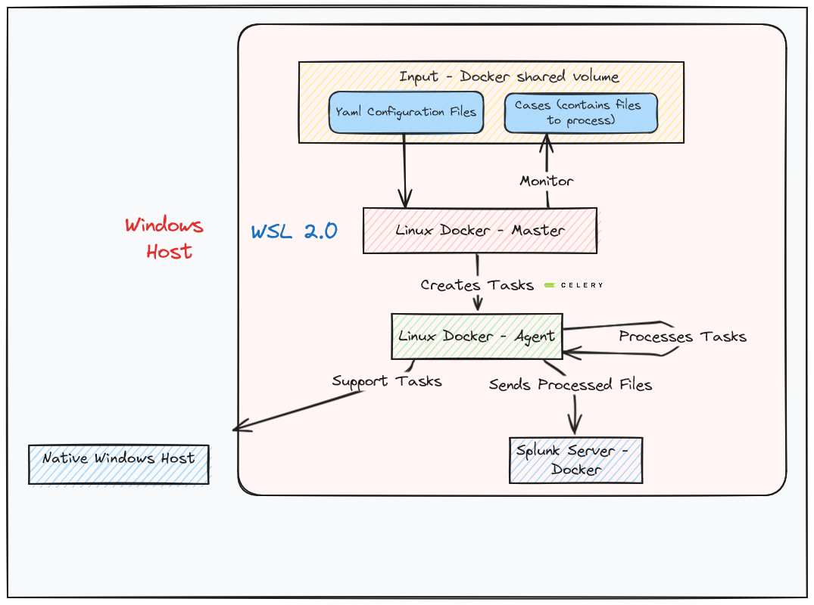
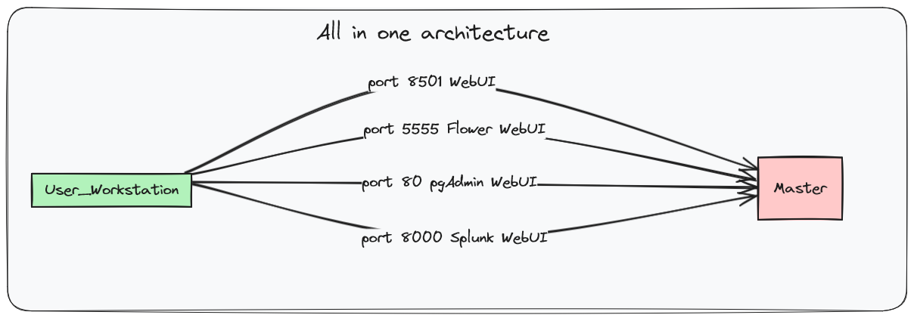
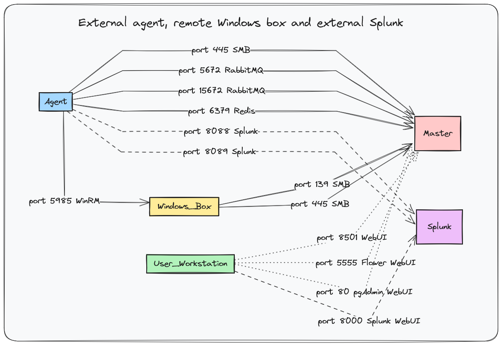
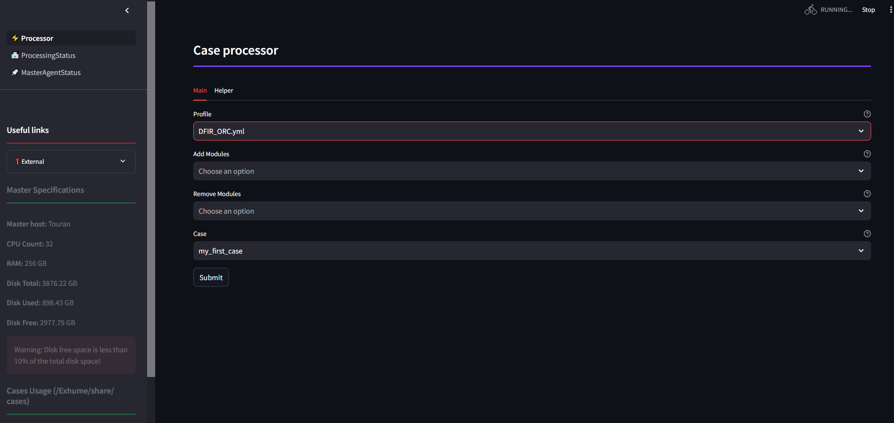
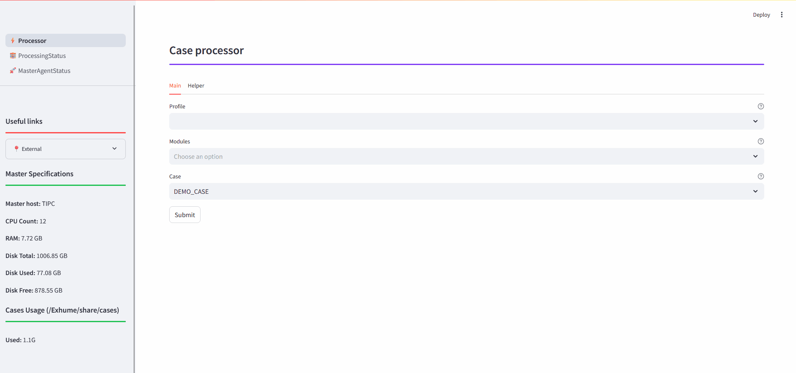
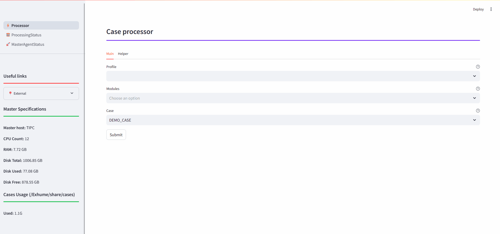
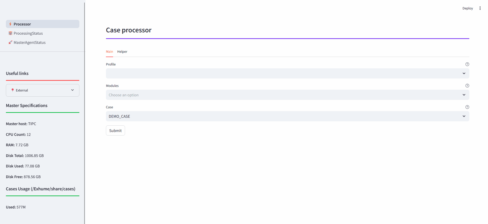
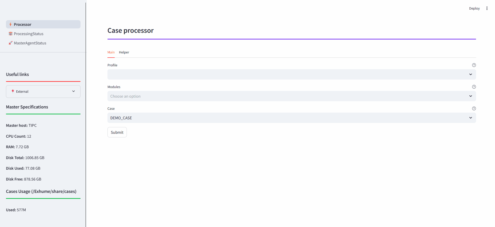

OSIR basics
Overview
OSIR is a Python project designed for the automated processing of data using modules and profiles. It is primarily aimed at handling forensic artifacts but can be utilized for any type of files. OSIR acts as a scheduler, applying processing tools to files, where the output of some tools can serve as input to others.
Features
Modular Design: Easily integrate new tools without writing code by using YAML configuration files.
Containerized: Fully containerized architecture for seamless deployment and management.
WebUI: Integrates an optional web UI to manages processing jobs.
Multi-OS: OSIR can run on Windows via WSL2 and on a Linux host.
Components & Terminology
Linux Master: Monitors a directory (called “case”) containing files to be processed and creates processing tasks for the agents.
Linux Agent: Processes tasks issued by the master and interacts with other components like the Windows machine or Splunk depending on the tasks.
Splunk (Optional): Can be deployed locally on the same host as the master or remotely.
Windows Box (Optional): Can be deployed locally on the same host as the master or remotely. Two ways of deploying automatically a Windows VM are currently supported: using vbox and Vagrant or using Dockur (Windows in Docker). If running OSIR agent on a Windows host, there is no need to deploy a Windows VM, the host itself is used.
Processing job: Action of processing a case containing files to process. Handled by master.
Processing tasks: Processing action decribed by a module configuration file, taking in input a directory or file and applying. Handled by agents.
Architectures
Note
The architectures depicted below can be mixed and adapted to fit your needs. For example, you can deploy multiple agents, use a single Windows box for several agents, and more.
All in one - LINUX HOST

All in one - WINDOWS HOST
Distributed agents

External Splunk and Windows hosts

Network flows
All in one host
External agent and remote Windows box

External agent, remote Windows box and external Splunk
Getting Started
Prerequisites
Use Case 1
You have a Linux host (not a VM) and you need everything to run on this single machine.
Theses requirements are needed:
Docker
Docker Compose
- If you need to run Windows tools, there are 3 possibilities:
- OSIR sets up a VM with Vbox and Vagrant automatically, so you need :
Vagrant (installed automatically if needed)
Virtual Box (installed automatically if needed)
Enough disk space for a Windows VM (50GB)
OSIR sets up a VM in Docker (Dockur project), so you only need dockur and around 30GB of disk space
- You already have a Windows VM, so you need :
An admin account
Winrm enabled
Networks flows described in the nexts sections
Use Case 2
You have a Windows host (not a VM) and you need everything to run on this single machine.
Warning
OSIR can be used on Windows system for all in one mode (server and agent on the same machine) and agent mode but not in server mode for distributed architecture.
Theses requirements are needed:
WSL 2
Docker installed in your WSL 2 VM
Docker Compose installed in your WSL 2 VM
Linux host
Networks flows described in the nexts sections
Use Case 3
You have want to setup a distribued architecture with a server and multiples agent. - OSIR server can installed on a Linux host, even a VM but not in WSL - If you need to run Windows tools, each agent must have a Windows box configured, a single box reachable from each VM can be used. - Networks flows described in the nexts sections
Warning
Only basic use cases are described but OSIR can be configured in many other ways.
All in one deployment
This guided example will demonstrate how to setup the solution and how to use it. For the example, All in one architecture is used.
Clone the repository:
git clone <TO CHANGE after release>
Master installation
Important
Make sure that the following ports are not currently in use :
80: pgadmin to administrate the postgres Database
5432: postgres Database
5672: AMQP protocol
15672: rabbitmq Management interface
6379: Reddis
5555: Flower
139: SMB used to access file from Windows box or remote agent
445: SMB used to access file from Windows box or remote agent
8501: Main Web interface
8000: Splunk web interface
8089: Splunk services interface
9997: Splunk event listening port
8088: HEC port for Splunk event forwarding
Launch the master setup:
cd OSIR
make master
Provide requested input, just press Enter each step to keep default options.

Agent installation
On the same host, launch the agent setup:
make agent
Warning
The first agent setup will take time as it downloads and configures a Windows VM using Vagrant.
Provide requested input, just press Enter each step to keep default options.

Usage
From Unix host
Create a directory (referenced as a ‘case’ in the documentation) under OSIR/share/cases/:
mkdir OSIR/share/cases/my_first_case
Copy the files you want to process under OSIR/share/cases/<case name>
cp /tmp/DFIR-ORC_WorkStation_DESKTOP-BV01_Browsers.7z OSIR/share/cases/my_first_case
cp /tmp/DFIR-ORC_WorkStation_DESKTOP-BV01_General.7z OSIR/share/cases/my_first_case
cp /tmp/DFIR-ORC_WorkStation_DESKTOP-BV01_Powershell.7z OSIR/share/cases/my_first_case
cp /tmp/DFIR-ORC_WorkStation_DESKTOP-BV01_SAM.7z OSIR/share/cases/my_first_case
cp /tmp/DFIR-ORC_WorkStation_DESKTOP-BV02_Browsers.7z OSIR/share/cases/my_first_case
cp /tmp/DFIR-ORC_WorkStation_DESKTOP-BV02_General.7z OSIR/share/cases/my_first_case
cp /tmp/DFIR-ORC_WorkStation_DESKTOP-BV02_Powershell.7z OSIR/share/cases/my_first_case
cp /tmp/DFIR-ORC_WorkStation_DESKTOP-BV02_SAM.7z OSIR/share/cases/my_first_case
Start agent:
sudo docker exec -it agent-agent OSIR.py --agent
Start master (open a new terminal to keep agent up):
sudo docker exec -it agent-agent OSIR.py --web
Access the web UI and run the processing
Use a defined profile or select several modules

The processing tasks can be followed in ProcessingStatus pages:

The processing job can be followed in MasterAgentStatus page:

From Windows host
DFIR ORC triage
To parse a DFIR_ORC collection, create a new case, upload the DFIR_ORC archive and run either the chosen profile or a specific module:
 

UAC triage
To parse a UAC collection, create a new case, upload the UAC archive and run either the chosen profile or a specific module:
 
